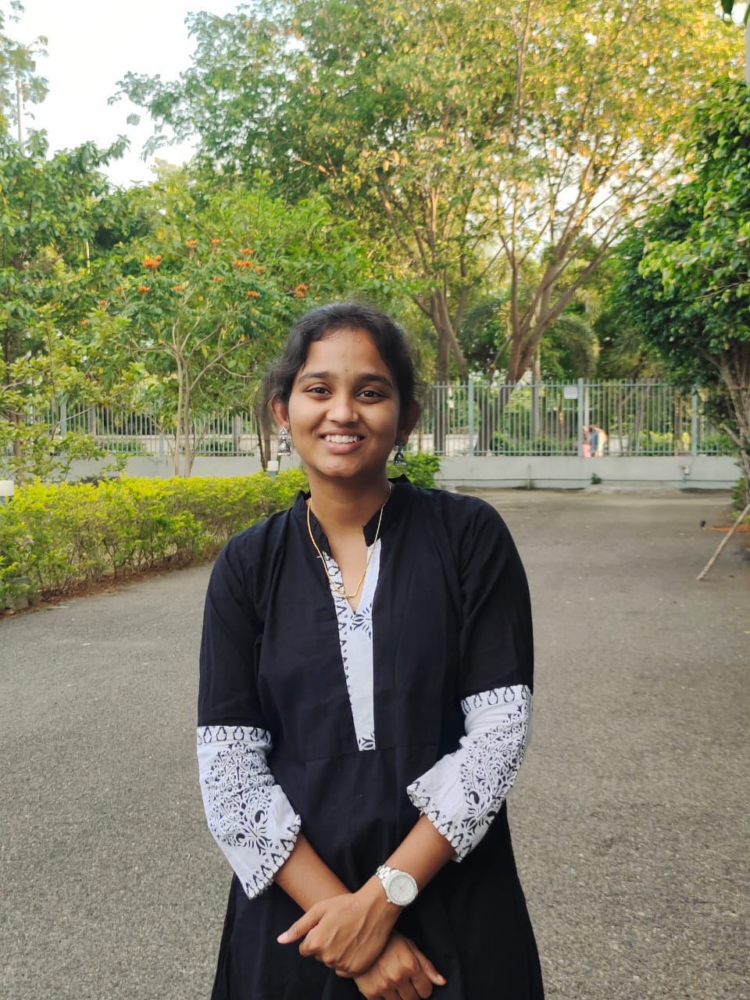

Since I was a child, I have always been fascinated by food. Whenever I went out with my father, one of the first things I would think about was, "What will he buy me to eat today?" Even the night before a holiday, I could not wait to find out what my mom was going to cook the next day. Food has always been something I looked forward to.
As I grew older, that feeling never really changed. Instead of waiting to see what my family would cook, I started searching for the best food spots around me and looking for new things to try.

I feel that trying new food is also a way of experiencing a culture. Whenever I try authentic food from a different region, I feel like I am getting a glimpse into a culture that I have missed being a part of.
Food can tell us so much about a place, its people, and its traditions. I have always found myself looking up information about food—where it comes from, how it is made, and what makes it special.
This curiosity is what motivated me to create this website. I wanted to create a place where people can stop by, discover new foods, and learn about the stories and cultures behind them. I hope it can be useful not only for people who love food like me, but also for anyone who wants to learn something new about food and different cultures.
I have always had a dream of owning a café someday. As a Computer Science student, I wanted to take a small step toward that dream by building a website that combines my love for food with what I am learning in technology.
Most importantly, food makes me happy. Sometimes, just one really good bite can completely change my mood. I wanted to create something that gives me that same feeling of curiosity, happiness, and excitement while also keeping me motivated to learn and create.
I also hope that what I learn while building this website will be helpful if I open my own café one day. For me, this website is not just a class project. It is a small step toward something I have always wanted to do.
Follow me on social media to discover more food, stories, and interesting flavors from different cultures.
"Sometimes, all it takes is one good bite to change your mood."